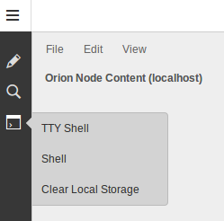

This plugin was developed for the Orion Node server.
The plugin adds a link in the shell side menu that clears the browser's local storage.
Since some Orion Node information is stored in local storage, clearing it allows an Orion developer to see changes more easily.